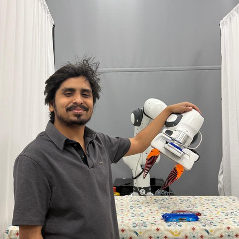
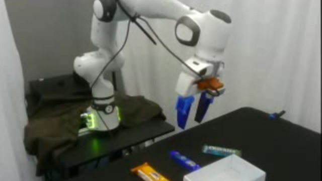
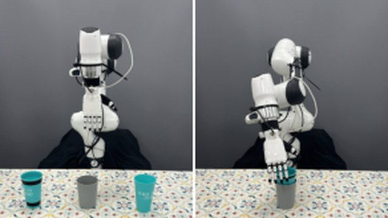

Riad Ahmed
I'm a Ph.D. student in Computer Science at the University of New Hampshire, advised by Momotaz Begum in the Cognitive Assistive Robotics Lab. I work on robot learning for manipulation.
A policy learned from demonstrations can do well in the lab and then fail when the scene changes a little. Most of my work is on detecting those failures and correcting the robot's actions. I also train policies for long, multi-stage tasks. My experiments run on Franka arms, an Inspire dexterous hand and a Boston Dynamics Spot.
I'm looking for a research internship for summer 2027. I'm on an F-1 visa and eligible for CPT and OPT.
Riad.Ahmed@unh.edu / CV / Google Scholar / GitHub / LinkedIn

News
- Nov 2026MIND, our paper on detecting and explaining policy failures, is on arXiv.
- Oct 2026Mok is submitted to ICRA 2027
- Jun 2026Trajectory-consistent flow matching was accepted to IROS 2026.
- May 2026Posted To Do or Not to Do on arXiv.
- Apr 2026TAIL-Safe was accepted to RSS 2026 in Sydney.
- Jan 2025Started my Ph.D. at UNH.
Selected publications
Papers from my Ph.D.; older work is on Google Scholar.
TAIL-Safe: Task-Agnostic Safety Monitoring for Imitation Learning Policies
Robotics: Science and Systems (RSS), 2026
TAIL-Safe gives each action the policy proposes a long-term safety score and corrects the ones that score low. We trained it on about 500 rollouts per task in a Gaussian Splatting digital twin of our lab. Under perturbations, it took a flow-matching policy on the real robot from 20–25% success to 100% (50 trials on each of two tasks).
Trajectory-Consistent Flow Matching for Robust Visuomotor Policy Learning
IEEE/RSJ International Conference on Intelligent Robots and Systems (IROS), 2026
Flow-matching policies are trained on single points of the flow but run by integrating it, so errors build up over a long task. We add supervision on whole segments of the integrated trajectory. Our policy finished two long-horizon tasks on a Franka FR3 in 70% and 60% of 20 trials (DP3 and Consistency FM: none), and a screwdriver task on a Spot in all 20.
Detecting and Explaining Robot Policy Failures from Sparse Internal Features
Under review at ICLR 2027
arXiv / video (earlier version)
MIND splits a vision-language-action policy's internal activations into sparse features and names the ones that match a manipulation concept on held-out runs. A monitor on those named features catches failures as they happen and explains them. With π0.5 in simulation it caught 99% of failures, against 95% for a monitor on the full activation, with half that monitor's false alarms.

To Do or Not to Do: Ensuring the Safety of Visuomotor Policies Learned from Demonstrations
arXiv preprint, 2026
We define an execution guarantee: from inside a specific region of the state space, a camera-based policy reaches its best success rate. A QP safety filter keeps the robot in that region; on a real Franka it lifted Diffusion Policy and Crossway Diffusion Policy from 50–70% success to 82–87%.

MoK: A Mixture of Koopman Operators for Learning Visuomotor Policies
Under review at ICRA 2027
MoK mixes a bank of Koopman operators with a learned gate at every step. Along recorded rollouts, its operators shrink errors over an episode; the operators in earlier Koopman policies grow them 8× to 20,000×. Cup stacking and kitchen prep on a Franka FR3 with an Inspire hand each succeeded in 70% of trials (DP3: 25% and 5%).
I'm now working on IF-Safe (This is Why You are Failing and Here is a Way to Recover: A Safety Watchdog for Visuomotor Policy, to be submitted to RSS 2027). It finds task-specific safety constraints inside a trained policy and turns them, with other easy-to-build criteria, into a control barrier function. When an action would break a constraint, IF-Safe corrects it along the gradient of a learned value function.
Experience
-
Graduate Research Assistant, Cognitive Assistive Robotics Lab, University of New HampshireJan 2025 – present
-
Lecturer, Computer Science and Engineering, BRAC University (on study leave)Jan 2023 – Dec 2024
Taught Introduction to Robotics and Programming Language II, supervised two undergraduate theses and co-founded a student robotics research group.
-
Machine Learning Engineer, Headless Technologies, DhakaDec 2021 – Jan 2023
Built a system for a client in Japan that tracked people across several cameras and recognized their actions from pose.
-
Mentor, Bangladesh national team, International Robot Olympiad2019 – 2022
Education and honors
-
Ph.D. in Computer Science, University of New Hampshire2025 – present
-
B.Sc. in Robotics and Mechatronics Engineering, University of Dhaka2017 – 2021
-
Government Honors Scholarship, for academic results in the B.Sc.2023
-
IFIC Bank Trust Fund Research Grant, for undergraduate research2022
-
Finalist, Robi Datathon 2.0 (top 10 of 325 teams)2022